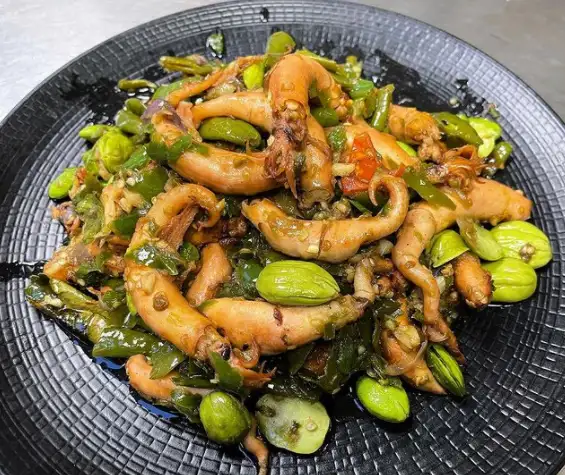

Cumi Cabai Hijau

Nilai Gizi / Porsi
- Energi: 155,5 kkal
- Protein: 13,2 g
- Lemak: 8,1 g
- Karbohidrat: 6,6 g
Bahan-Bahan
- 250 g cumi basah, potong dan sayat-sayat
- 1 sdm minyak jagung
Bumbu
- 2 siung bawang putih, cincang halus
- 25 g bawang bombay, cincang halus
- 4 buah cabai hijau, potong bulat
- 1 buah tomat hijau, potong kasar
- 1 lembar daun jeruk purut
- 1/2 sdt garam
- 1/2 sdt merica bubuk
- 1 sdm kecap manis
Cara Memasak
- Tumis bawang putih dan bawang bombay sampai harum.
- Masukkan cabai hijau, tomat hijau, dan daun jeruk kemudian tumis hingga agak layu.
- Masukkan cumi, aduk rata dengan bumbu dan biarkan sampai berubah warna.
- Tambahkan garam, merica, dan kecap manis lalu masak hingga cumi matang dan bumbu meresap.
- Setelahnya angkat dan sajikan selagi hangat.
Kembali ke Menu